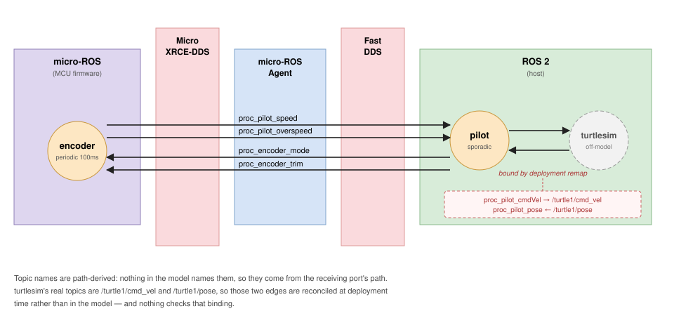

Chapter 1 of 4 in HAMR ROS 2 Development.
This chapter describes what HAMR generates when you target ROS 2, and what you
write afterwards. The running example is Turtle Control: a micro-ROS node on
a microcontroller reads a wheel encoder, an rclcpp node closes a control loop,
and stock turtlesim
is the plant. Turtlesim was chosen because it ships with ros-<distro>-desktop,
needs no hardware, and moves visibly when the system works.
We assume you have read Model-Level Development with SysMLv2, and that you are comfortable with AADL threads, ports, and dispatch protocols as described in HAMR Semantics Building Blocks and Computational Concepts. You do not need to have read Code-Level Development for Microkit, but if you have, much of the component-development workflow will already be familiar — entry points, preserved blocks, and the implement-and-test loop work the same way here. This chapter concentrates on what is different about ROS 2.
This chapter addresses a single system built from the model as-is, with topic names left at their defaults. Binding your nodes to topics that already exist — namespaces, explicit topic names, and integrating stock ROS nodes such as turtlesim — is covered in ROS 2 Topic Naming and Platform Integration. Building and running the generated workspace is covered in Building and Running ROS 2 Systems.
The Example
The complete source for this variant — all three .sysml files — is on the ROS 2 Example Models page.
The system has two modeled threads and one off-model peer. They do not run in
the same place: encoder is firmware on a microcontroller, pilot runs on a
host, and everything between them is transport.

encoder is periodic at 100 ms and is realized as a micro-ROS node —
C code intended for a microcontroller. pilot is sporadic and is realized as
an rclcpp node — C++ running on a full ROS 2 installation. Which backend a
thread gets is a model-level decision, made with the Ros_Node_Kind property:
part def Encoder :> Thread {
...
attribute :>> Dispatch_Protocol = Periodic;
attribute :>> Period = 100 [ms];
attribute :>> Ros_Node_Kind = microRos;
}
part def Pilot :> Thread {
...
attribute :>> Dispatch_Protocol = Sporadic;
attribute :>> Ros_Node_Kind = ros2;
}
A single system can mix the two freely. They interoperate over ordinary ROS topics, so from the graph’s point of view there is nothing special about the boundary — but the code on each side is quite different, and the differences are the substance of this chapter.
The port kinds are chosen to cover all three AADL categories in both directions:
| Port | Kind | Direction | Illustrates |
|---|---|---|---|
speed |
event data | encoder → pilot | dispatches the sporadic pilot |
overspeed |
event | encoder → pilot | a second trigger, and the generated Empty message type |
mode |
data | pilot → encoder | a latched setting, sampled by the periodic encoder |
trim |
event data | pilot → encoder | an arrival that cannot dispatch a periodic thread |
cmdVel |
data | pilot → turtlesim | an unconnected boundary port |
pose |
data | turtlesim → pilot | an unconnected boundary port |
In this variant turtlesim is deliberately left off-model: there is no
component declaration for it and no connection, so pilot.cmdVel and
pilot.pose are boundary ports whose peer is supplied at deployment time. The
naming chapter models it properly.
What Code Generation Produces
Code generation writes a ROS 2 workspace. For the example above:
Makefile
readme.md
src/
turtle_control_structure_cpp_pkg/ <- the rclcpp nodes
turtle_control_structure_cpp_pkg_interfaces/ <- .msg definitions
turtle_control_structure_cpp_pkg_bringup/ <- launch files
microros_apps/
colcon.meta <- micro-ROS firmware configuration
turtle_control_structure_microros_pkg/ <- the micro-ROS nodes
Four packages, with one distinction worth noting immediately: the micro-ROS
package is not under src/. It is built into a separate micro-ROS firmware
workspace rather than alongside the rclcpp packages, which is why it sits in its
own top-level directory. Building and Running ROS 2 Systems covers that.
The interfaces package holds a .msg file for every model-defined datatype the
system communicates:
msg/WheelSpeed.msg msg/TrimCommand.msg msg/OperatingMode.msg
msg/Float32.msg msg/Empty.msg
How those are derived from the model is covered under Datatypes below.
Base code and user code
Inside a node package, generated files are split into two directories, and the split is the most important thing to understand about the layout:
src/base_code/ <- regenerated every time; do not edit
src/user_code/ <- generated once, then yours
include/<pkg>/base_headers/
include/<pkg>/user_headers/
Every base-code file carries the banner
// Do not edit this file as it will be overwritten if HAMR codegen is rerun
while every user-code file carries
// This file will not be overwritten if HAMR codegen is rerun
Your application logic lives in user_code. Re-running code generation after a
model change will rewrite the infrastructure around it and leave your code alone.
Datatypes
Every model-defined type a system communicates becomes a .msg file in the
interfaces package. The mapping is mostly mechanical, but three parts of it are
not what you would guess from the model, and all three show up the first time you
write application code.
Records and base types
The encoder’s WheelSpeed is an ordinary record of one field:
part def WheelSpeed :> Data {
part rpm : Base_Types::Float_32;
}
which generates
# WheelSpeed.msg
Float32 rpm
Note what did not happen: the field is Float32, not ROS’s built-in float32.
AADL base types are generated as messages in their own right —
# Float32.msg
float32 data
— and record fields refer to them. A port can be typed directly with a base type, so each one needs a message of its own; fields then reference that same message rather than the primitive, which keeps one representation per model type.
The practical consequence is a .data you have to remember:
..._msg__WheelSpeed speed = example_WheelSpeed();
speed.rpm.data = 42.0f; // not speed.rpm = 42.0f
Field names are converted to ROS convention: an underscore is inserted before
each capital and the capital is lowered, so deltaRpm in the model becomes
delta_rpm in the message. That is done per letter, so consecutive capitals each
get their own underscore — a field named myURLValue becomes my_u_r_l_value.
Avoid acronyms in field names if you care what the message looks like.
Type names are treated differently: the package qualifier is dropped and any .
or _ is removed, but the case is left alone. WheelSpeed stays WheelSpeed,
and this is also where Float32 comes from — it is Base_Types::Float_32 with
the qualifier dropped and the underscore removed, not a name chosen for base
types. A model type named my_type would become mytype, so if you want
PascalCase message names, write PascalCase type names.
Enums
A SysMLv2 enum becomes a uint8 field plus one constant per literal:
enum def OperatingMode { enum Idle; enum Run; enum Fault; }
# OperatingMode.msg
uint8 operating_mode
uint8 OPERATING_MODE_IDLE=0
uint8 OPERATING_MODE_RUN=1
uint8 OPERATING_MODE_FAULT=2
Compare against the constants rather than bare integers — the numbering follows
declaration order, so inserting a literal in the middle of the enum renumbers
everything after it. A generated enumToString is available for logging.
Arrays
Arrays are where the mapping stops being mechanical. ROS .msg has no
multi-dimensional arrays, so a multi-dimensional AADL array is flattened, and
the dimensions are emitted as constants beside it:
| Model | Generated |
|---|---|
one-dimensional [10] |
Integer64[10] arr |
| unbounded | Integer64[] arr |
two-dimensional [5][12] |
int16 DIM_0 = 5int16 DIM_1 = 12Integer64[60] arr |
Warning
Indexing a flattened array is your responsibility. arr[i][j] in the model is
arr[i * DIM_1 + j] in the generated code, and nothing checks that you got it
right — a wrong stride compiles cleanly and reads the wrong element. Use the
DIM_n constants rather than repeating the literals.
What is not generated
Two categories produce no .msg file:
- Event ports. They carry no payload, but a ROS topic needs a message type,
so a single
Empty.msgis synthesized and shared by all of them. - Platform-provided types, covered next.
Platform-provided types
pilot.cmdVel carries geometry_msgs::Twist and pilot.pose carries
turtlesim::Pose. Neither is generated — both already exist in native ROS
packages, and the model refers to them rather than defining them:
package geometry_msgs {
part def Twist :> Data {
attribute :>> Type_Provenance = Provenances::Platform_Provided;
}
}
The structural convention is that the SysMLv2 package name is the ROS package
name and the part def name is the message name, so geometry_msgs::Twist
denotes geometry_msgs/msg/Twist. No .msg file is generated, and the native
package becomes a dependency of the generated one:
<depend>turtlesim</depend>
<depend>geometry_msgs</depend>
Because code generation does not know the type’s layout, there is also no example builder for it. Application code constructs these with native calls:
geometry_msgs::msg::Twist cmd;
cmd.linear.x = 1.5;
cmd.angular.z = 0.8;
put_cmdVel(cmd);
Example builders
For each generated message type, code generation emits an example_<Type>()
function returning a zero-initialised value:
static inline ..._msg__WheelSpeed example_WheelSpeed(void) {
..._msg__WheelSpeed msg = {0};
msg.rpm.data = 0.0f;
return msg;
}
These exist so the generated skeleton compiles and runs before you have written
anything, which is why proc_encoder_timeTriggered begins by publishing
example_WheelSpeed(). They are scaffolding, not API — replace the call rather
than building on it.
Entry Points
Each thread gets an initialize entry point and one or more compute entry points, exactly as on other HAMR platforms. What differs is their shape, which follows from the dispatch protocol.
A periodic thread gets one compute entry point, invoked on the period:
void proc_encoder_timeTriggered(proc_encoder_base_t * self)
A sporadic thread gets one compute entry point per triggering port, invoked when a message arrives on that port:
void proc_pilot::handle_speed(const ...::msg::WheelSpeed::SharedPtr msg)
void proc_pilot::handle_overspeed()
Note that handle_overspeed takes no argument — an event port has no payload to
pass. And note that pose and cmdVel get no entry point at all: they are data
ports, which do not trigger a sporadic thread. A data port is read when the
component chooses to read it.
Port APIs
Ports are reached through generated accessors rather than by touching ROS publishers and subscriptions directly:
| Call | Available for | Meaning |
|---|---|---|
get_<port>() |
in data ports | the most recent value |
get_<port>() |
in event data ports on a periodic thread | the arrival for this dispatch, or NULL if none |
has_<port>() |
in event ports on a periodic thread | whether an event arrived for this dispatch |
put_<port>(msg) |
out data and event data ports | send a value |
put_<port>() |
out event ports | raise the event |
The generated user code is a working skeleton that exercises the ones your model implies. For the periodic encoder:
void proc_encoder_timeTriggered(proc_encoder_base_t * self)
{
// Handle communication
// example receiving messages on data ports
..._msg__OperatingMode * mode = get_mode(self);
// example receiving queued arrivals -- at most one per port per dispatch
..._msg__TrimCommand * trim = get_trim(self);
if (trim != NULL) {
LOG_INFO("Received trim");
}
// Example publishing messages
..._msg__WheelSpeed speed = example_WheelSpeed();
put_speed(self, &speed);
LOG_INFO("Sent speed: %s", MESSAGE_TO_STRING(&speed));
put_overspeed(self);
}
LOG_INFO, LOG_WARN and LOG_ERROR are generated macros that route to the
node’s ROS logger, so your output appears with the node name attached and behaves
like any other ROS logging. MESSAGE_TO_STRING renders a generated message type
for debugging; it is available for model-defined types only, for reasons the
naming chapter explains.
How Dispatch Is Realized
The AADL model says what the dispatch semantics are. How they are achieved differs between the two backends, and the difference is visible in the generated code.
Sporadic threads
On both backends, a sporadic thread’s compute entry point is driven by message
arrival. On rclcpp this is a subscription callback; on micro-ROS it is an rclc
executor callback. In both cases an arriving message on a triggering port runs
the corresponding handle_<port>.
Periodic threads
A periodic thread runs on a timer, so its dispatches are already scheduled — an arrival on an event or event data port cannot dispatch it. AADL’s answer is that the arrival waits and is consumed at the next dispatch, and that is what HAMR generates:
static void proc_encoder_receiveInputs(proc_encoder_base_t * self)
{
self->proc_encoder_trim_hasEvent = self->proc_encoder_trim_pending;
self->proc_encoder_trim_pending = false;
}
static void period_timer_callback(rcl_timer_t * timer, int64_t last_call_time)
{
(void)timer;
(void)last_call_time;
if (g_self != NULL) {
proc_encoder_receiveInputs(g_self);
proc_encoder_timeTriggered(g_self);
proc_encoder_sendOutputs(g_self);
}
}
receiveInputs runs immediately before your entry point and consumes at most
one arrival per port per dispatch, whether or not your code reads the port.
That is AADL’s Dequeue_Protocol of OneItem. get_trim() returns NULL when
nothing arrived, which is why the generated skeleton tests it.
Data ports behave differently and more simply: they latch. get_mode() returns
whatever arrived most recently, and a value that is superseded before you read it
is simply gone — which is the point of a data port.
Note
Only the AADL default Queue_Size of 1 is supported, on both backends. Declaring
a larger depth is a generation error, not a warning — the ROS 2 linter
rejects the model rather than quietly emitting a system that buffers less than
the model says.
At the supported depth of 1, a second arrival within one dispatch period replaces the first, and the generated node says so at run time:
[WARN] [rover.proc_encoder]: trim: overwrote an arrival that no dispatch had consumed
Micro-ROS Nodes Are Always Strict
HAMR’s ROS 2 backend has a --strict-aadl-mode flag. It controls whether rclcpp
nodes reproduce AADL’s port semantics exactly — inputs frozen for the duration of
a dispatch, outputs released together when the dispatch completes — or whether
they take the more direct route of reading and publishing as the application
code runs.
The flag does not apply to micro-ROS nodes. They are always strict. This is worth understanding rather than memorizing, because the reason is structural.
What distinguishes non-strict from strict on the input side is whether the compute entry point can observe a message arriving while it is running. On rclcpp that is a real possibility: generated nodes use a multi-threaded executor with a reentrant callback group, so a subscription callback can execute concurrently with your entry point.
micro-ROS has no such possibility. The rclc executor is single-threaded: main
calls it and it never leaves that thread. Subscription callbacks, the timer
callback, your entry point, and every put_<port> all run in sequence on one
thread. No callback can interleave with your code, so inputs are stable for the
whole dispatch whether anyone asked for that or not.
Outputs are handled to match. put_<port> does not publish; it stages the value
in the node, and a generated sendOutputs publishes the staged set after your
entry point returns:
static void proc_encoder_sendOutputs(proc_encoder_base_t * self)
{
if (self->proc_encoder_speed_out_hasValue) {
rcl_ret_t ret = rcl_publish(&self->proc_encoder_speed_publisher,
&self->proc_encoder_speed_out, NULL);
...
self->proc_encoder_speed_out_hasValue = false;
}
...
}
An observer therefore never sees half of a dispatch’s output. Both halves of strict semantics hold, so the flag has nothing left to govern.
Code generation reports this rather than leaving it implicit, because in a mixed system it is the one place where the generated code does not do what the command line appears to say:
micro-ROS nodes always generate AADL strict semantics, whatever --strict-aadl-mode says:
inputs are frozen for the dispatch and outputs are released together at its completion.
The flag was not given, so the rclcpp nodes are lax while these are not.
Affected: encoder.
Tip
The practical consequence for your code: do your I/O inside the entry point.
Reading a sensor from a driver thread or an interrupt handler and publishing from
there steps outside the model’s execution shape — the declared Period stops
governing when messages leave the node — before it is even a thread-safety
question. Keeping I/O in the entry point is both what the model says and the
simpler thing to reason about.
What You Do After Code Generation
For this variant, three things.
Fill in the preserved blocks. The user_code files are yours. The generated
bodies publish example values and log what they receive, which is enough to watch
the system run but is not an implementation.
Bind the two boundary ports. pilot.cmdVel and pilot.pose have no modeled
peer, so they get default topic names derived from their port paths —
proc_pilot_cmdVel and proc_pilot_pose. Stock turtlesim publishes and
subscribes on /turtle1/pose and /turtle1/cmd_vel. Something has to reconcile
those, and in this variant it is deployment configuration: a remap rule at launch,
or on the command line.
Start turtlesim yourself. The generated launch file starts only what the model
contains, and in this variant that is proc_pilot_exe — turtlesim is not in the
model, so nothing generated knows it should be running. The bringup package does
not depend on it either. Launching the system therefore means launching two
things, in two places, with nothing tying them together:
ros2 run turtlesim turtlesim_node &
ros2 launch turtle_control_structure_bringup turtle_control_structure_ros2.launch.xml
Forget the first line and the second still comes up clean. The pilot publishes to a topic no one subscribes to and waits on one no one writes, which looks the same from the outside as a turtle that simply is not moving.
Generated nodes leave a marked seam for exactly this. On a micro-ROS node it is a preserved block in the node’s options:
// NODE OPTIONS - additions within these tags will be preserved when re-running Codegen
// Add rcl arguments after "--ros-args", e.g. a remap rule binding one of this
// node's topics to a preexisting node's topic:
// "-r", "some_port:=/some/other/topic"
// Write the match side of a remap rule relative (no leading '/') so that it keeps
// matching if the node is later placed in a namespace.
static const char * const node_options[] = {
"--ros-args"
};
// NODE OPTIONS - additions within these tags will be preserved when re-running Codegen
Warning
Nothing checks that binding. A remap is a deployment-time string: if it is misspelled, or if turtlesim changes its topic names, the system builds and starts cleanly and simply never exchanges those messages. This is the central weakness of leaving a peer off-model, and it is what the naming variant removes — there, both edges are modeled connections subject to generation-time checking.
Current Limitations
Queue_Size > 1is not supported on either backend. Only the AADL default of 1 is realized, and declaring more is rejected at generation time.- GUMBO contracts are not translated by this backend. There is no GUMBOX, no property-based test generation, and no run-time monitoring for ROS 2 targets. Contracts in the model are still meaningful for analysis, but nothing is generated from them here.
- Python node generation is not implemented.
--ros2-nodes-language Cppis the supported setting; requesting Python reports an error. - Platform-provided types get no example builder. Code generation does not know a native ROS type’s layout, so application code must construct values of it with native calls. See Platform-provided types.
Next
ROS 2 Topic Naming and Platform Integration takes the same system and adds model-carried topic names, namespaces, and a proper declaration of turtlesim, removing both deployment remaps.